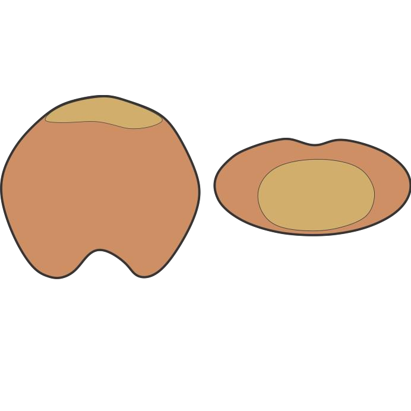
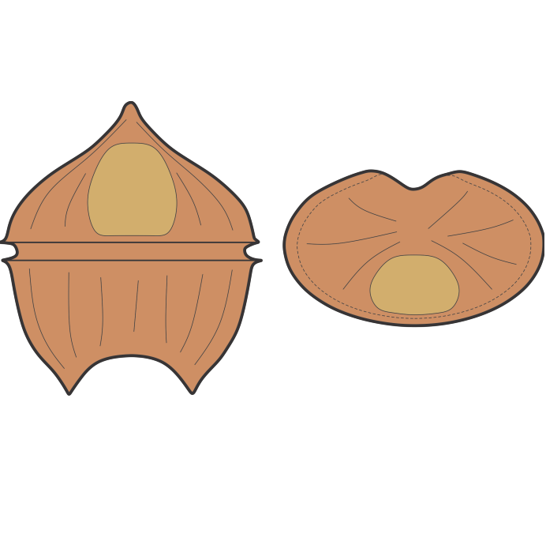
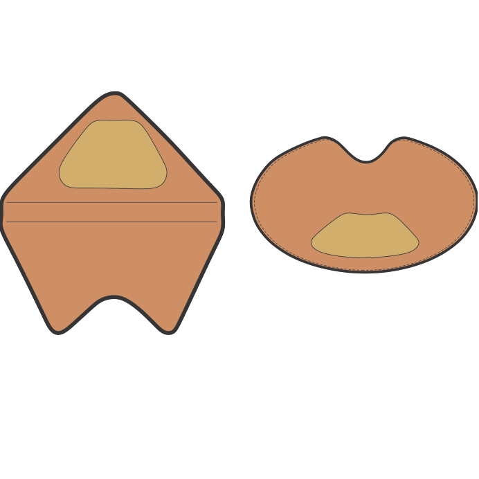
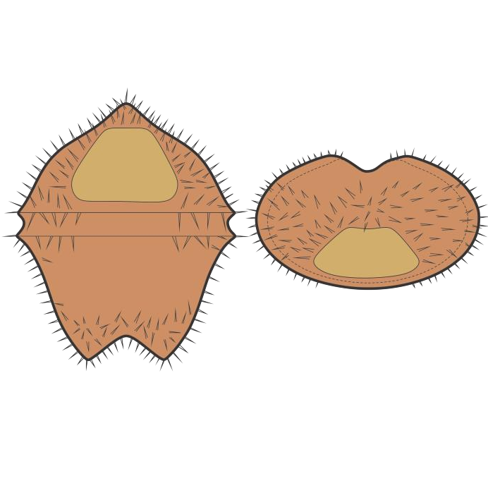

CYSTS LIST
- Alexandrium
- Archaeperidinium/RBSC
- Brigantedinium/Protoperidinium
- Diplopsalopsis/Protoperidinium
- Dubridinium
- Gymnodinium
- Impagidinium
- Lejeunecysta
- Nematosphaeropsis
- Peridinioids
- Polykrikos
- RBSC/Protoperidinium
- Selenopemphix
- Spiniferites
- Stelladinium
- Transparent/Hollow
- Transparent/Solid
- Transparent/Spherical
- Trinovantedinium
- Votadinium
PERIDINIOIDS
Generic characteristics of peridinioid dinoflagellate cysts that are bilaterally symmetrical, pentagonal and have one apical and two antapical horns.
Characteristics |
||||
Appearance |
 |
 |
 |
 |
General shape |
Dorsoventrally compressed, pentagonal to rounded |
Peridinioid with dorsoventral compression and a pentagonal ambitus. Epi- and hypocyst of approximately equal length |
Pentagonal, peridinioid, acavate |
Proximochorate, protoperidiniacean, pentagonal to subcircular, dorsoventrally compressed. |
Tabulation |
Not expressed |
Only indicated near the archeopyle and paracingulum |
Absent |
Dorsally reflected by archeopyle, ventrally variable |
Wall structure |
Smooth or microgranular single wall |
Leaevigate to chagrinate |
Autophragm, acavate, thickens at apex and antapex |
Biphragmal, with or without pericoels, usually closed adpressed; pericoel development not pronounced or spectacular. The surface of the phragma may be psilate or carry a simple ornament, but it does not possess any reticulum |
Wall thickness |
Thin wall |
Thin wall |
Thick wall |
- |
Ornamentation |
None, small processes of pontifossate ornamentation |
None |
None |
Surface variably covered by short, penitabular and intratabular, but never sutural, solid or hollow spines or processes. hollow processes may be distally open or closed |
Paracingulum |
No indentation, at most absence of ornamentation |
A planar or very slightly helicoidal paracingulum is delimited by two folds and a shallow indentation. The folds are distally entire and may be continuous or partite. When partite, the paracingulum is separated into seven anterior and five posterior divisions |
Conspicuous and planar, usually delimited by low ridges |
Well to poorly defined |
Parasulcus |
Absent to expressed as shallow depression |
Marked by a shallow depression |
Very deeply indented, with reflecion of flagellar pores |
Well to poorly defined |
Epicystal characters |
Rounded apex or elongated apical horn |
Apex rounded or prolonged into a small distinct boss |
Conical or with shoulder |
Lateral sides convex or straight, apex rounded or angular with or without apical horn or boss |
Hypocystal characters |
Rounded broad or elongated antapical horns separated by a shallow or deep concavity |
Two approximately equal, symmetrically located horns which are small, pointed and solid |
Symmetrical horns or flat antapically |
Antapical horns symmetrical or assymmetrical |
Archeopyle |
Intercalary 1a or 2a, dorsal or involving apical section. Hexagonal or rounded |
Intercalary 2a and is symmetrically located on the middorsal line. It extends almost to the paracingulum. Operculum free or attached along the posterior margin. |
Basically intercalary. ?2a, but may also involve apical plate ?3' |
Simple hexa 2a intercalary archeopyle, operculum free |
Reference |
Reid (1977) |
Bujak et al. (1980) |
Harland (1977) |
de Verteuil & Norris (1992) |
(Gurdebeke et al., 2019, modified).